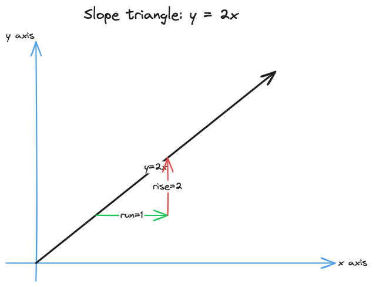
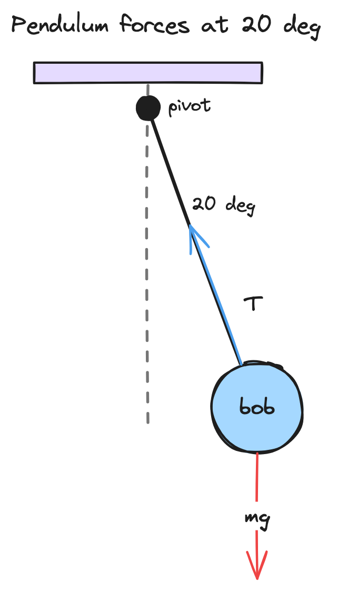
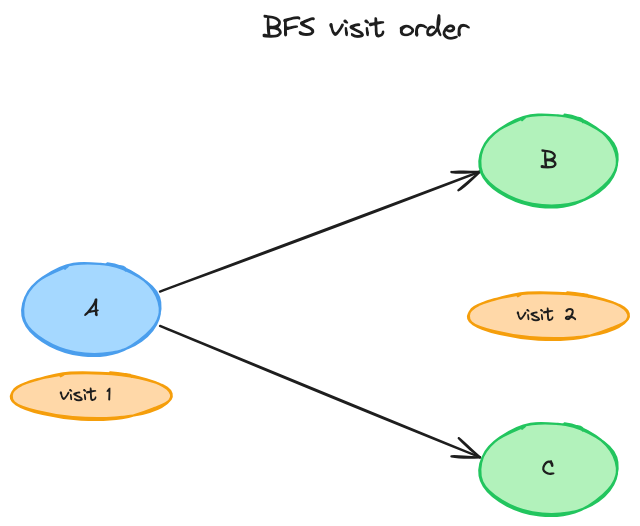
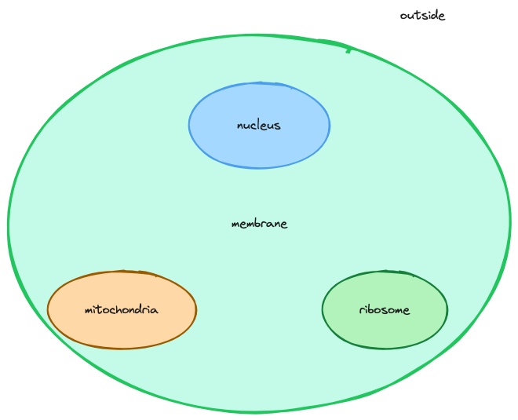
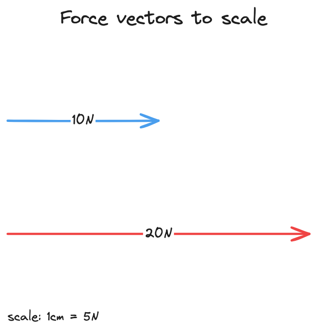
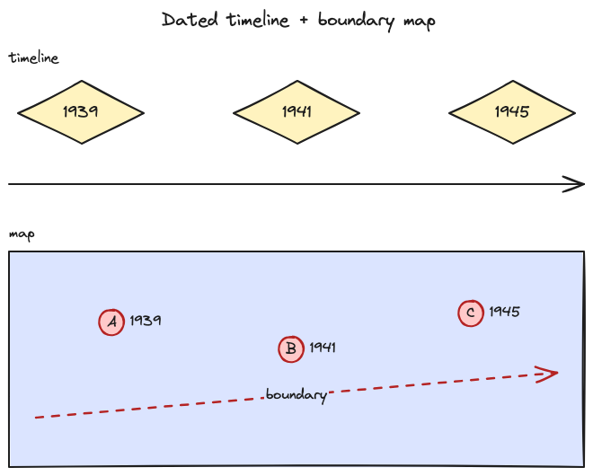
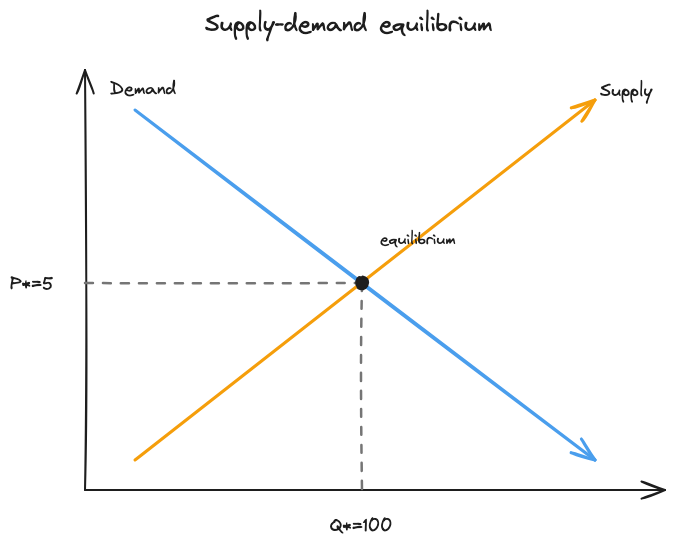
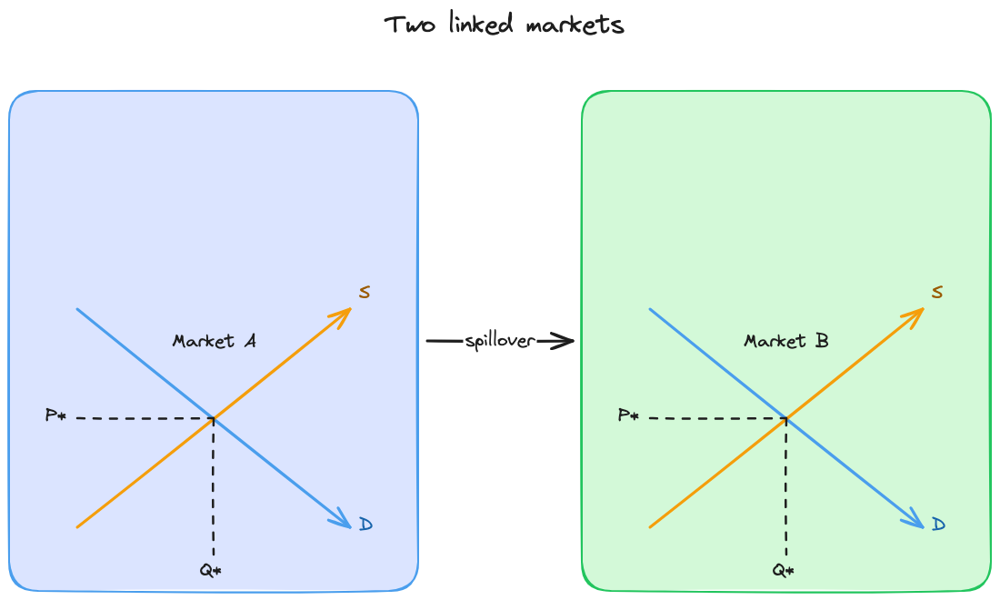
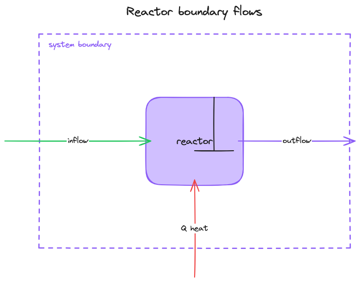
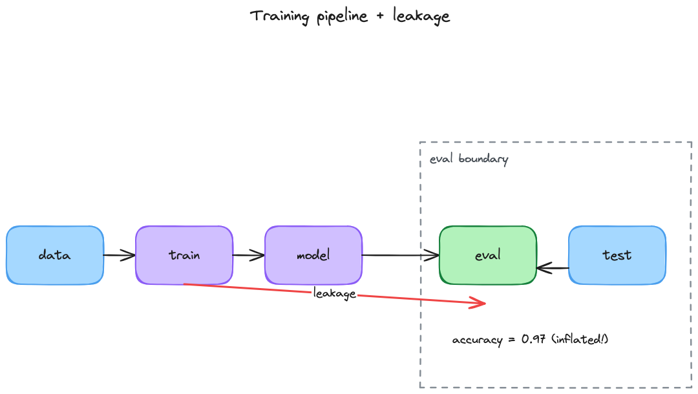

Videos play inline, sims/Pinepaper run inline in iframes, Excalidraw shows as image. Rate each 1-10 + feedback. Scores save to browser + Export JSON.
Skill: skills/excalidraw/SKILL.md · Claim: A learner can see rise over run for y=2x.
# E01 L01 [excalidraw] — Slope triangle y=2x Subject: math | Skill route: `skills/excalidraw/SKILL.md` Claim: A learner can see rise over run for y=2x. Brief: Draw axes, line y=2x, one slope triangle with rise/run labeled. Must include: x axis, y axis, y=2x, rise=2, run=1 Continuity: math symbols, blue axes, black line, red triangle Acceptance: all 5 labels verbatim in SVG; no overlap at 800px wide Learner prediction: predict the result before running/moving, then compare.

Skill: skills/excalidraw/SKILL.md · Claim: A learner can see gravity vs tension at 20 deg displacement.
# E02 L02 [excalidraw] — Pendulum forces at 20 deg Subject: physics | Skill route: `skills/excalidraw/SKILL.md` Claim: A learner can see gravity vs tension at 20 deg displacement. Brief: Draw pivot, string at 20 deg, bob, gravity arrow down, tension arrow along string. Must include: pivot, 20 deg, mg, T, bob Continuity: physics units deg, red gravity, blue tension Acceptance: arrow directions correct; labels verbatim Learner prediction: predict the result before running/moving, then compare.

Skill: skills/excalidraw/SKILL.md · Claim: A learner can see BFS visits A then B,C.
# E03 L03 [excalidraw] — BFS visit order 3 nodes Subject: computer-science | Skill route: `skills/excalidraw/SKILL.md` Claim: A learner can see BFS visits A then B,C. Brief: Draw nodes A,B,C with directed edges A->B, A->C, numbered visit badges 1,2,3. Must include: A, B, C, visit 1, visit 2 Continuity: CS graph layout left-to-right Acceptance: edges directed; order badges present Learner prediction: predict the result before running/moving, then compare.

Skill: skills/excalidraw/SKILL.md · Claim: A learner can see what is inside vs outside the cell.
# E04 L04 [excalidraw] — Cell boundary + organelles Subject: biology | Skill route: `skills/excalidraw/SKILL.md` Claim: A learner can see what is inside vs outside the cell. Brief: Draw membrane boundary containing nucleus, mitochondria, ribosome; label outside. Must include: membrane, nucleus, mitochondria, ribosome, outside Continuity: bio terms, containment behind objects Acceptance: boundary contains 3 parts; outside label present Learner prediction: predict the result before running/moving, then compare.

Skill: skills/excalidraw/SKILL.md · Claim: A learner can compare 10N vs 20N vectors drawn to scale.
# E05 L05 [excalidraw] — Two force vectors to scale Subject: physics | Skill route: `skills/excalidraw/SKILL.md` Claim: A learner can compare 10N vs 20N vectors drawn to scale. Brief: Draw two horizontal arrows with 1:2 length ratio, labeled 10N and 20N with scale note. Must include: 10N, 20N, scale, N Continuity: SI units N, same baseline Acceptance: length ratio ~2x; units on both Learner prediction: predict the result before running/moving, then compare.

Skill: skills/excalidraw/SKILL.md · Claim: A learner can place 3 dated decisions on time and place.
# E06 L06 [excalidraw] — Dated timeline + boundary map Subject: history | Skill route: `skills/excalidraw/SKILL.md` Claim: A learner can place 3 dated decisions on time and place. Brief: Draw timeline 1939,1941,1945 with matching map pins A,B,C and one boundary line. Must include: 1939, 1941, 1945, boundary Continuity: dates identical in both views Acceptance: 3 dates + boundary present Learner prediction: predict the result before running/moving, then compare.

Skill: skills/excalidraw/SKILL.md · Claim: A learner can read equilibrium P*,Q* off crossing curves.
# E07 L07 [excalidraw] — Supply/demand equilibrium Subject: economics | Skill route: `skills/excalidraw/SKILL.md` Claim: A learner can read equilibrium P*,Q* off crossing curves. Brief: Draw S/D curves crossing, dashed lines to P*=5, Q*=100, dense but non-overlapping labels. Must include: Supply, Demand, P*=5, Q*=100, equilibrium Continuity: econ color: blue demand, orange supply Acceptance: crossing + dashed guides; labels legible Learner prediction: predict the result before running/moving, then compare.

Skill: skills/excalidraw/SKILL.md · Claim: A learner can compare equilibrium across two side-by-side markets.
# E08 L08 [excalidraw] — Two linked markets Subject: economics | Skill route: `skills/excalidraw/SKILL.md` Claim: A learner can compare equilibrium across two side-by-side markets. Brief: Draw two S/D panels with same color meanings, link arrow showing spillover. Must include: Market A, Market B, spillover, P*, Q* Continuity: same colors both panels Acceptance: two panels + link arrow Learner prediction: predict the result before running/moving, then compare.

Skill: skills/excalidraw/SKILL.md · Claim: A learner can trace mass+energy across the reactor boundary.
# E09 L09 [excalidraw] — Reactor boundary flows Subject: chemical-engineering | Skill route: `skills/excalidraw/SKILL.md` Claim: A learner can trace mass+energy across the reactor boundary. Brief: Draw system boundary, inflow, outflow, heat arrow, reactor vessel with stirrer. Must include: system boundary, inflow, outflow, Q heat, reactor Continuity: transport arrows: green in, purple out, red heat Acceptance: boundary + 3 crossings labeled Learner prediction: predict the result before running/moving, then compare.

Skill: skills/excalidraw/SKILL.md · Claim: A learner can see where test leakage crosses the eval boundary.
# E10 L10 [excalidraw] — Training pipeline + leakage boundary Subject: artificial-intelligence | Skill route: `skills/excalidraw/SKILL.md` Claim: A learner can see where test leakage crosses the eval boundary. Brief: Draw pipeline data->train->eval with trust boundary, red leakage arrow crossing it, metric label. Must include: train, test, eval boundary, leakage, accuracy Continuity: red=violation, gray=boundary Acceptance: boundary + violation arrow distinct Learner prediction: predict the result before running/moving, then compare.

Skill: skills/pinepaper/SKILL.md · Claim: A learner can read three labeled sides of one triangle.
# P01 L01 [pinepaper] — Fixed triangle sides Subject: math | Skill route: `skills/pinepaper/SKILL.md` Claim: A learner can read three labeled sides of one triangle. Brief: Diagram: triangle with sides a,b,c labeled; caption states relation to inspect. Must include: side a, side b, side c, triangle Continuity: math symbols italic Acceptance: 3 side labels verbatim; renders in iframe Learner prediction: predict the result before running/moving, then compare.
Skill: skills/pinepaper/SKILL.md · Claim: A learner can match arrows to numbers in the table.
# P02 L02 [pinepaper] — Free-body + value table Subject: physics | Skill route: `skills/pinepaper/SKILL.md` Claim: A learner can match arrows to numbers in the table. Brief: Diagram plus table: same mg=9.8N, T=9.2N values in both. Must include: mg=9.8N, T=9.2N, table Continuity: same numbers diagram+table Acceptance: values agree; units present Learner prediction: predict the result before running/moving, then compare.
Skill: skills/pinepaper/SKILL.md · Claim: A learner can link queue states to a length-over-time chart.
# P03 L03 [pinepaper] — Queue states + length chart Subject: computer-science | Skill route: `skills/pinepaper/SKILL.md` Claim: A learner can link queue states to a length-over-time chart. Brief: Ordered states q0..q3 plus bar chart of lengths 0,1,2,1 tied to same steps. Must include: q0, q3, length chart, enqueue, dequeue Continuity: same step labels both views Acceptance: chart bars match states Learner prediction: predict the result before running/moving, then compare.
Skill: skills/pinepaper/SKILL.md · Claim: A learner can verify each plotted point against the table.
# P04 L04 [pinepaper] — Demand curve + exact table Subject: economics | Skill route: `skills/pinepaper/SKILL.md` Claim: A learner can verify each plotted point against the table. Brief: Curve through (1,10),(2,8),(3,6) with table of identical points; sourced-data label. Must include: (1,10), (2,8), (3,6), sourced data Continuity: exact values, no smoothing lie Acceptance: 3 points match table Learner prediction: predict the result before running/moving, then compare.
Skill: skills/pinepaper/SKILL.md · Claim: A learner can see position and velocity change together.
# P05 L05 [pinepaper] — Pendulum motion + linked chart Subject: physics | Skill route: `skills/pinepaper/SKILL.md` Claim: A learner can see position and velocity change together. Brief: Animated bob + linked sine chart with moving dot; play/pause; same angle state. Must include: angle, velocity, play, chart Continuity: same pendulum, rad units Acceptance: motion and chart agree; controls work sandboxed Learner prediction: predict the result before running/moving, then compare.
Skill: skills/pinepaper/SKILL.md · Claim: A learner can connect particle spread to concentration profile.
# P06 L06 [pinepaper] — Diffusion gradient + profile Subject: biology | Skill route: `skills/pinepaper/SKILL.md` Claim: A learner can connect particle spread to concentration profile. Brief: Animated particles + concentration curve updating together; assumption label. Must include: high C, low C, flux, simulated output Continuity: simulated vs measured labeled Acceptance: both views update together Learner prediction: predict the result before running/moving, then compare.
Skill: skills/pinepaper/SKILL.md · Claim: A learner can inspect resonance without clipped labels.
# P07 L07 [pinepaper] — Driven oscillation no clipping Subject: physics | Skill route: `skills/pinepaper/SKILL.md` Claim: A learner can inspect resonance without clipped labels. Brief: Motion + amplitude-vs-frequency chart, drive slider, all labels in frame at 1280x800. Must include: drive f, amplitude, resonance, Hz Continuity: Hz everywhere Acceptance: no clipping; slider rewires chart+motion Learner prediction: predict the result before running/moving, then compare.
Skill: skills/pinepaper/SKILL.md · Claim: A learner can tie heat input to field and time graph.
# P08 L08 [pinepaper] — Heat model + field + graph Subject: chemical-engineering | Skill route: `skills/pinepaper/SKILL.md` Claim: A learner can tie heat input to field and time graph. Brief: Heater slider drives 1D rod field colors + T(t) graph; model assumptions shown. Must include: heater W, T(t), assumptions, degC Continuity: degC, watts labeled Acceptance: three views share state Learner prediction: predict the result before running/moving, then compare.
Skill: skills/pinepaper/SKILL.md · Claim: A learner can test a tax policy and keep controls after export.
# P09 L09 [pinepaper] — Policy slider + export-safe controls Subject: economics | Skill route: `skills/pinepaper/SKILL.md` Claim: A learner can test a tax policy and keep controls after export. Brief: Tax slider shifts equilibrium, surplus readout; controls survive sandboxed iframe export. Must include: tax, surplus, equilibrium, reset Continuity: USD units Acceptance: controls work in viewer iframe; reset restores Learner prediction: predict the result before running/moving, then compare.
Skill: skills/pinepaper/SKILL.md · Claim: A learner can vary a wave and read its spectrum.
# P10 L10 [pinepaper] — Wave + spectrum + controls Subject: physics | Skill route: `skills/pinepaper/SKILL.md` Claim: A learner can vary a wave and read its spectrum. Brief: String motion + spectrum bars + frequency/amplitude sliders; prediction question. Must include: frequency, amplitude, spectrum, prediction Continuity: Hz, m units Acceptance: spectrum follows sliders; all labels consistent Learner prediction: predict the result before running/moving, then compare.
Skill: skills/pinepaper/SKILL.md · Claim: A learner can identify the directions a transformation preserves and their eigenvalues.
# P11 L11 [pinepaper] — Eigenvectors and eigenvalues Subject: math | Skill route: `skills/pinepaper/SKILL.md` Claim: A learner can identify which directions a linear transformation preserves and read their eigenvalues. Brief: For A = diag(2, 1/2), select x-axis, y-axis, or diagonal input vectors. Compare v and Av on one coordinate plane. The first two are eigenvectors; the diagonal is not. Must include: A, v, Av, eigenvector, eigenvalue, λ, interactive selection Continuity: The same matrix and vector coordinates appear in the diagram and explanation. Acceptance: All three choices work after HTML export inside the gallery iframe; x gives λ = 2, y gives λ = 1/2, and diagonal changes direction.
Skill: skills/subject/SKILL.md · Claim: Learner predicts sign of change before moving slope slider.
# S01 L01 [simulation] — Slope slider Subject: math | Skill route: `skills/subject/SKILL.md` Claim: Learner predicts sign of change before moving slope slider. Brief: One slider m in y=mx; readout; prediction prompt; reset. Must include: slope m, reset, prediction, y=mx Continuity: math notation KaTeX-style Acceptance: slider rewires line+readout; reset works; no network fetch Learner prediction: predict the result before running/moving, then compare.
Skill: skills/subject/SKILL.md · Claim: Learner tests how length changes period.
# S02 L02 [simulation] — Pendulum angle+length Subject: physics | Skill route: `skills/subject/SKILL.md` Claim: Learner tests how length changes period. Brief: Sliders angle, length; period readout T=2pi sqrt(L/g); reset. Must include: angle deg, length m, period s, reset Continuity: SI units on all controls Acceptance: T formula correct; responsive 1280x800 Learner prediction: predict the result before running/moving, then compare.
Skill: skills/subject/SKILL.md · Claim: Learner steps through BFS and predicts next visit.
# S03 L03 [simulation] — BFS stepper Subject: computer-science | Skill route: `skills/subject/SKILL.md` Claim: Learner steps through BFS and predicts next visit. Brief: Buttons next/reset, visited list, queue display; prediction prompt. Must include: next, reset, queue, visited Continuity: same graph A-B-C Acceptance: step order correct; reset clears Learner prediction: predict the result before running/moving, then compare.
Skill: skills/subject/SKILL.md · Claim: Learner varies threshold and sample size, reads histogram.
# S04 L04 [simulation] — Threshold + sampling histogram Subject: math | Skill route: `skills/subject/SKILL.md` Claim: Learner varies threshold and sample size, reads histogram. Brief: Sliders threshold, n; histogram of 100 draws; reset; assumptions shown. Must include: threshold, n, histogram, assumptions Continuity: probability units Acceptance: histogram updates; reset works Learner prediction: predict the result before running/moving, then compare.
Skill: skills/subject/SKILL.md · Claim: Learner finds angle maximizing range at fixed v0.
# S05 L05 [simulation] — Projectile range Subject: physics | Skill route: `skills/subject/SKILL.md` Claim: Learner finds angle maximizing range at fixed v0. Brief: Sliders v0, angle; range readout; trajectory canvas; reset. Must include: v0 m/s, angle deg, range m, g=9.81 Continuity: SI units, g stated Acceptance: range math correct; canvas in frame Learner prediction: predict the result before running/moving, then compare.
Skill: skills/subject/SKILL.md · Claim: Learner separates growth rate from carrying capacity.
# S06 L06 [simulation] — Logistic growth r/K Subject: biology | Skill route: `skills/subject/SKILL.md` Claim: Learner separates growth rate from carrying capacity. Brief: Sliders r,K; population curve; N0 fixed; reset; model shown. Must include: r, K, N0, dN/dt Continuity: bio model labeled as model Acceptance: curve follows logistic; K asymptote visible Learner prediction: predict the result before running/moving, then compare.
Skill: skills/subject/SKILL.md · Claim: Learner repeats trials to distinguish noise from shift.
# S07 L07 [simulation] — Stochastic demand trials Subject: economics | Skill route: `skills/subject/SKILL.md` Claim: Learner repeats trials to distinguish noise from shift. Brief: Buttons run-100/reset, mean/sd readout, histogram; seed note. Must include: run 100, mean, sd, histogram Continuity: USD units Acceptance: repeatable; stats update Learner prediction: predict the result before running/moving, then compare.
Skill: skills/subject/SKILL.md · Claim: Learner maps drive to phase portrait.
# S08 L08 [simulation] — Damping + drive phase plot Subject: physics | Skill route: `skills/subject/SKILL.md` Claim: Learner maps drive to phase portrait. Brief: Sliders damping, drive; phase canvas + amplitude readout; reset. Must include: damping, drive, phase, amplitude Continuity: same oscillator state both views Acceptance: phase responds; no overflow Learner prediction: predict the result before running/moving, then compare.
Skill: skills/subject/SKILL.md · Claim: Learner tests a retry threshold policy under failures.
# S09 L09 [simulation] — Policy-rule retry sim Subject: computer-science | Skill route: `skills/subject/SKILL.md` Claim: Learner tests a retry threshold policy under failures. Brief: Threshold slider, step/run, success-rate readout; tempting-bad-policy trap explained. Must include: threshold, success rate, retry, prediction Continuity: policy rule stated Acceptance: policy changes outcome; trap documented Learner prediction: predict the result before running/moving, then compare.
Skill: skills/subject/SKILL.md · Claim: Learner keeps reactor in limits with T/C controls.
# S10 L10 [simulation] — Reactor T/C control + alarms Subject: chemical-engineering | Skill route: `skills/subject/SKILL.md` Claim: Learner keeps reactor in limits with T/C controls. Brief: Sliders coolant, feed; T/C readouts, alarm banner, limits table; reset; responsive. Must include: coolant, feed, alarm, limits, reset Continuity: degC, mol/L units Acceptance: alarm triggers out-of-limit; readable at phone width Learner prediction: predict the result before running/moving, then compare.
Skill: skills/manim-voice-animation/SKILL.md · Claim: Learner watches one change: dot moves along y=2x.
# V01 L01 [video] — Dot along line 1 cue Subject: math | Skill route: `skills/manim-voice-animation/SKILL.md` Claim: Learner watches one change: dot moves along y=2x. Brief: 1 cue, exact narration, dot + line, clean first/ending frames. Must include: cue v01a, dot, y=2x, narration Continuity: silent preview; authored duration Acceptance: storyboard valid; preview plays; labels in frame Learner prediction: predict the result before running/moving, then compare.
Skill: skills/manim-voice-animation/SKILL.md · Claim: Learner watches secant tend to tangent.
# V02 L02 [video] — Secant to tangent 2 cues Subject: math | Skill route: `skills/manim-voice-animation/SKILL.md` Claim: Learner watches secant tend to tangent. Brief: 2 cues, secant slope readout approaching 4 at x=2 for x^2. Must include: cue v02a, cue v02b, secant, tangent Continuity: same axes both cues Acceptance: slope converges; each cue played once conceptually Learner prediction: predict the result before running/moving, then compare.
Skill: skills/manim-voice-animation/SKILL.md · Claim: Learner follows visit order over time.
# V03 L03 [video] — BFS animation 3 cues Subject: computer-science | Skill route: `skills/manim-voice-animation/SKILL.md` Claim: Learner follows visit order over time. Brief: 3 cues visiting A,B,C with narration per cue. Must include: cue v03a, cue v03b, cue v03c, queue Continuity: node colors stable Acceptance: 3 cues ordered; final frame readable silent Learner prediction: predict the result before running/moving, then compare.
Skill: skills/manim-voice-animation/SKILL.md · Claim: Learner sees basis vectors rotate together.
# V04 L04 [video] — Basis transform ValueTracker Subject: math | Skill route: `skills/manim-voice-animation/SKILL.md` Claim: Learner sees basis vectors rotate together. Brief: ValueTracker-style tween of basis, determinant readout. Must include: e1, e2, det, tracker Continuity: matrix symbols consistent Acceptance: vectors + det agree Learner prediction: predict the result before running/moving, then compare.
Skill: skills/manim-voice-animation/SKILL.md · Claim: Learner checks displayed angle equals drawn angle.
# V05 L05 [video] — Pendulum numbers tied to geometry Subject: physics | Skill route: `skills/manim-voice-animation/SKILL.md` Claim: Learner checks displayed angle equals drawn angle. Brief: Swung bob with DecimalNumber angle readout driven by same state. Must include: theta, readout, pivot, L Continuity: deg units both Acceptance: readout matches geometry Learner prediction: predict the result before running/moving, then compare.
Skill: skills/manim-voice-animation/SKILL.md · Claim: Learner sees Riemann sum refine without leftover updaters.
# V06 L06 [video] — Area accumulation cleanup Subject: math | Skill route: `skills/manim-voice-animation/SKILL.md` Claim: Learner sees Riemann sum refine without leftover updaters. Brief: Bars refine 4->8->16, error readout shrinks, no ghost objects. Must include: n=4, n=16, error, integral Continuity: same function x^2 Acceptance: error decreases; ending clean Learner prediction: predict the result before running/moving, then compare.
Skill: skills/manim-voice-animation/SKILL.md · Claim: Learner tracks relaxations with subtitle timing.
# V07 L07 [video] — Dijkstra 5 cues + subtitles Subject: computer-science | Skill route: `skills/manim-voice-animation/SKILL.md` Claim: Learner tracks relaxations with subtitle timing. Brief: 5 cues, per-cue subtitle lines, distance labels update. Must include: dist, relax, subtitle, 5 cues Continuity: graph layout fixed Acceptance: subtitles align to cues; distances correct Learner prediction: predict the result before running/moving, then compare.
Skill: skills/manim-voice-animation/SKILL.md · Claim: Spoken timing coordinates apex callout with motion.
# V08 L08 [video] — Projectile cue-timed motion Subject: physics | Skill route: `skills/manim-voice-animation/SKILL.md` Claim: Spoken timing coordinates apex callout with motion. Brief: Cue-timed apex marker + velocity components; cue_player concept. Must include: apex, vx, vy, cue timing Continuity: SI units Acceptance: callout at apex frame; no cue reused conceptually Learner prediction: predict the result before running/moving, then compare.
Skill: skills/manim-voice-animation/SKILL.md · Claim: Learner follows propagation without decorative camera motion.
# V09 L09 [video] — Wave propagation stable camera Subject: physics | Skill route: `skills/manim-voice-animation/SKILL.md` Claim: Learner follows propagation without decorative camera motion. Brief: Traveling wave, fixed camera, wavelength callout moves with crest. Must include: lambda, crest, fixed camera, direction Continuity: stable frame Acceptance: camera static; callout tracks crest Learner prediction: predict the result before running/moving, then compare.
Skill: skills/manim-voice-animation/SKILL.md · Claim: Learner sees gradient path descend on 3D surface where camera move reveals structure.
# V10 L10 [video] — Surface + gradient path camera reveals Subject: math | Skill route: `skills/manim-voice-animation/SKILL.md` Claim: Learner sees gradient path descend on 3D surface where camera move reveals structure. Brief: Contour-projected surface, path dots, one justified camera orbit, final readable frame. Must include: contour, path, orbit, minimum Continuity: same f(x,y) throughout Acceptance: orbit justified; path descends; ending legible Learner prediction: predict the result before running/moving, then compare.